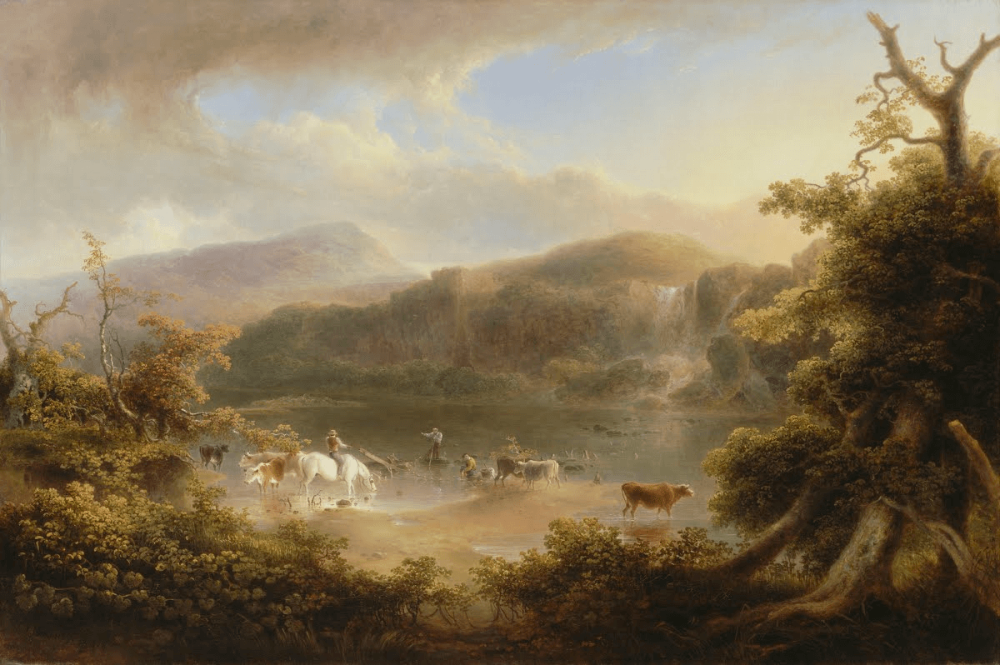

Kişisel Yayın Portalı
Atakan Aydınoğlu
Kağıdın dokusundan ekranın ışığına sızan kelimeler,
kurgu ile gerçeğin kesişim noktası.
- 0
- yayın
- 0
- hikaye
- 0
- çeviri
Tasnif Sahası
Anlatı Katmanları
Bu arşiv, her metnin kendi özgün sesini duyurabileceği,
türe özgü bir okunabilirlik deneyimi sunmak için tasarlandı.
Atakan Aydınoğlu Youtube
Kıyafetlerimiz mi bizi giyiyor?
Kültür ve Sanat ekseninde incelemeler.
Arşiv
Yayınlar
Tür, alt sınıf, etiket ve tarihe göre gezilebilir yayın dizini.
Tür
Alt sınıf
Oksijen Kredisi Evreni
ASP Oksijen Simülatörü
Şehirlerdeki oksijen seviyeleri hiyerarşiye göre belirlenir. Kaydırıcıyı kullanarak farklı bölgelerin insan zihni ve bedeni üzerindeki etkilerini deneyimleyin.
Aktarım Birimi Bağlantısı Aktif
Uyarı: Biyolojik verimin korunması için oksijen seviyesi bulunduğunuz bölgeye göre regüle edilmektedir.
"Ciğerlerinde paslı bir ağırlık."
Klinik Etki: Fiziksel iş gücü için tasarlanmış düşük seviye. Dikkat dağınıklığını engeller ama uzun vadede hafızayı bulanıklaştırır.
İlham ve Kökenler
Evrenin Kökeni: Oksijen Kredisi
Oksijen Kredisi evreninin arka planını oluşturan prensipleri ve dünyanın işleyişini anlatan bir çerçeve.
Medeniyetin sürekliliği, her bireyin kendi biyolojik ve zihinsel verimine en uygun atmosferde konumlandırılmasına bağlıdır. Atmosfer Stabilizasyon Programı (ASP), bu dengenin korunması adına şehirlerin oksijen seviyelerini katı bir hiyerarşiyle yönetir:
Veritas (%19,0): Bilişsel dengenin ve bilgi akışının sürdürülebilmesi için optimal sınır.
Subsidium (%17,0): Fiziksel iş gücünün odaklanma becerisini artırmak ve dikkat dağınıklığını engellemek adına düşük seviye.
Praesidium (%20,5): Girişim ve yatırım vizyonerlerinin yüksek stresini nötralize eden uyarılmış seviye.
Ordium (%21,0): Yönetim, akademi ve şifa merkezleri için tam stabilizasyon.
Sistem otomatik olsa da, organik sapmaları engellemek adına insan eliyle yazılmış 'Aktarım Birimi Raporları' manuel kontrol için hayati önem taşır.
Şehrin her meydanına dikilmiş renkli ışıklandırmalar ve panolar, Veritas Vox’un steril yalanlarını topluma enjekte eder: 'Sağlık, Verim, İstikrar'. Ancak bu ihtişamlı vitrinin arkasında, sistemin oksijen oranlarına yaptığı gizli, gürültülü ve tekinsiz fiziksel müdahaleler gizlidir. Gerçeği sorguladığı için işinden ve özgürlüğünden olan eski Vox çalışanları, sistemin illüzyonunu bozmak adına karanlık ara sokaklarda ve Veritas Satranç Kulübü gibi paravan noktalarda örgütlenmektedir. Onlar için sistem bir koruyucu değil; insan nefesini bir borç mekanizmasına çeviren devasa bir tabuttur.
Atmosfer Stabilizasyon Programı Asayiş Gücü (A.S.P.A.G.), sistemin kurallarına itaati ve asayişi sağlamakla görevli, arma ve rozetlerden arındırılmış militarist bir denetim mekanizmasıdır. Şehirlerde kimlik doğrulama cihazları, tek tip saç-sakal tıraşına sahip standart personel yapısı ve zifiri karanlık çöktüğünde bile sokakları gündüz gibi aydınlatan asayiş ışıklarıyla tam bir gözetim toplumu inşa edilmiştir. VAG77 (Veritas Asayiş Gücü) gibi birimler, sadece düzeni korumakla kalmaz; sistemin kusursuz işleyişine karşı doğabilecek her türlü 'anormallik ve şüphe' dalgasını daha büyümeden soğurmak üzere eğitilir
İletişim
Metinler ve çeviri işleri üzerine
Yayınlar, çeviri örnekleri ve inceleme yazıları hakkında iletişim için.